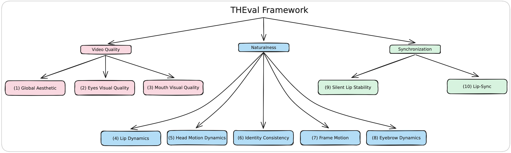

We introduce THEval, a comprehensive framework for evaluating Talking Head (TH) Generation.
THEval assesses video quality, naturalness, and synchronization using a set of 10 carefully designed metrics.
By combining algorithmic and perceptual evaluations, it enables a fine-grained and objective assessment of TH generation models.
To address the limitations of existing evaluation methods, we structure THEval into three core evaluation dimensions.
Video Quality measures aesthetic appeal and region-specific quality (mouth, eyes).
Naturalness captures the realism of generated expressions, head motions, lip dynamics, and eyebrow movements.
Synchronization evaluates the alignment between lip movements and speech, as well as silent lip stability.
For each dimension, we introduce a Metric Suite, ensuring an adaptive and fair assessment across different TH generation approaches.
THEval also incorporates human preference studies, demonstrating strong correlation between its evaluation results and subjective user ratings.
Our experiments on state-of-the-art TH models highlight that while many methods achieve strong lip synchronization,
challenges remain in generating expressive and artifact-free TH videos.
THEval serves as a benchmarking tool to guide the development of more robust and trustworthy generative models,
continuously evolving to assess new advancements in the field.